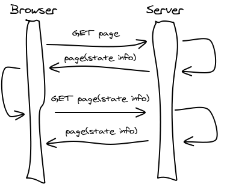

Seitti 2017
More about Django and Sessions
More about Django Basics
Models
Models describe the data layout of your application and (mostly) hide the database implementation.
In the simplest of cases an object in a model would correspond to a line in a database table and each of it's fields to a specific database column. While the reality is often more complicated and database implementations differ, models hide this complexity from us.
from django.db import models
class Student(models.Model):
name = models.CharField(max_length=30)
student_number = models.CharField(max_length=6)
group = models.ForeignKey(ProjectGroup)
class ProjectGroup(models.Model):
name = models.CharField(max_length=30)
project_deadline = models.DateField()Models and Their Fields
Defining basic models is similar to defining a normal class. But with special variable types, such as:
CharFieldneeds at leastmax-lengthas parameterTextFieldEmailFieldNote: set the max_length to 254IntegerFieldFileField
Django documentation has a handy Model field refence.
Models and Relations
Many-to-one relationship in Models is defined by ForeignKey.
It requires the name of the class that the model is related to as the first parameter.
- In case of circular relationships, the name can be provided as a string.
- If the relation is recursive, the parameter is the string 'self'.
from django.db import models
class Car(models.Model):
manufacturer = models.ForeignKey('Manufacturer')
# ...
class Manufacturer(models.Model):
# ...
passExample from Django Docs ForeignKey.
Similarly, many-to-many relations are created with ManyToManyField and one-to-one relations with OneToOneField.
Models and Methods
It is a good idea to place as much of your data related business logic to the models as possible. Treat it similarly to normal object-oriented programming.
One of the 'magic methods' in Python is __str__ that you should define in models; this determines how they are represented in Django Admin, for instance.
from django.db import models
class Person(models.Model):
fname = models.CharField(max_length=50)
middle = models.CharField(max_length=50)
lname = models.CharField(max_length=50)
def __str__(self):
return "{} {}.".format(self.fname, self.lname[0])
# After importing Person in manage.py shell
>>> djikstra = Person(fname="Edsger", middle="Wybe", lname="Dijkstra")
>>> djikstra
<Person: Edsger D.>Models and Methods Example
An example of defining logic in models:
import datetime
from django.db import models
from django.utils import timezone
class Question(models.Model):
# ...
def was_published_recently(self):
recent = timezone.now() - datetime.timedelta(days=1)
return self.pub_date >= recentExample from Django tutorial, more information in Django Docs model methods.
Field Options
Some of the most important field options:
null=Trueallows storing empty values (null) in databaseblank=Trueallows empty values (validation)primary_keymakes this field the primary key (normally such a field is created automatically for you)unique=Truerequires each value in this field to be unique
class Person(models.Model):
name = models.CharField(max_length=250)
email = models.EmailField(max_length=254, blank=True)Django docs on Field options.
Models and manage.py
After making changes to your models - adding a field etc. - you should
first run makemigrations . This creates migration files and tells you what it aims to do in the actual migration.
If you are happy with the changes, you can use the migrate -command to perform the migration and chage the database structure.
python3 manage.py help makemigrations
Usage: manage.py makemigrations [options] [app_label [app_label ...]]
Creates new migration(s) for apps.
python3 manage.py help migrate
Usage: manage.py migrate [options] [app_label] [migration_name]
Updates database schema. Manages both apps
with migrations and those without.
$ python3 manage.py help sqlall
Usage: manage.py sqlall [options] <app_label app_label ...>
Prints the CREATE TABLE, custom SQL and CREATE INDEX SQL statements
for the given model module name(s).
Accessing Models
Models can be accessed through SomeModel.objects, some examples:
# Returns one instance or raises errors
instance = SomeModel.objects.get(field_name = desired_value)
# Get all the instances of some model (QuerySet)
all_instances = SomeModel.objects.all()
# Get some instances of some model (QuerySet)
some_instances = SomeModel.objects.filter(field_name = desired_value)After you've created/changed an instance you need to save()
to commit the changes to the database. For removing database entries there is a delete().
# pk is a shortcut to referring to primary key
project = Project.objects.get(pk=87645) # Get a specific project
project.status = 'completed' # Change something
project.save() # Save changesQuerySets
QuerySets are database queries that will eventually turn into collections (ordered) of objects from a particular model. They are only evaluated (access the database) when it is actually needed. Some examples:
all_books = Books.objects.all()
len(all_books) # this will hit the database
# Will get books published this year, ordered by
# author field (ascending) and title (descending)
new_books = Books.objects.filter(year=2014).order_by('author', '-title')
# old_books will be all the books, except
# those found in new_books QuerySet
old_books = all_books.exclude(new_books)
# They can be iterated
for book in new_books:
print(book.author)
Note that most of the filters etc. applied to a queryset will change
the query instead of filtering a final result.
See Django Docs on making queries and QuerySet API.
Views
Views
Views in Django take an HttpRequest object and return an HttpResponse object.
from django.http import HttpResponse
import datetime
def current_datetime(request):
now = datetime.datetime.now()
html = "<html><body>It is now %s.</body></html>" % now
return HttpResponse(html)Example from Django docs Views.
Views Example
If an item that was requested was not found, the view can raise a Http404 error.
render() is a convenient way of returning a rendered template with data as a response.
from django.http import Http404
from django.shortcuts import render_to_response
from polls.models import Poll
def detail(request, poll_id):
try:
p = Poll.objects.get(pk=poll_id)
except Poll.DoesNotExist:
raise Http404
return render(request, 'polls/detail.html', {'poll': p})Example from Django docs Views.
Shortcuts
Django provides convenient shortcuts to accomplish common tasks:
get_object_or_404(...)callsget()as usual, but raises Http404 if not foundget_list_or_404(...)callsfilter()and raises Http404 if resulting set is emptyrender(request, template, [, dict])renders given context/dict with the template and returns HttpResponseredirect(to)to can be view name, hardcoded url or an object with.get_absolute_url()method
Request and Response in Django
"When a page is requested, Django creates an HttpRequest object that contains metadata about the request. Then Django loads the appropriate view, passing the HttpRequest as the first argument to the view function. Each view is responsible for returning an HttpResponse object." Django Docs
Request and Response

HttpRequest Object
The HttpRequest object contains metadata about the request. Most of the metadata is set by the user's browser, but middleware might process/create some data as well, for instance session information.
# In some view...
# path for the request, not including domain
print(request.path) # e.g. "/myblog/add_comment"
if request.method == 'GET':
... # e.g. show the add comment form
elif request.method == 'POST':
... # write a new comment
# Similarly
if request.user.is_authenticated():
... # User is logged in, act accordingly
else:
... # User has not been authenticated
HttpRequest Object
GET/POST parameters can be accessed with HttpRequest.GET and HttpRequest.POST which will return a QueryDict.
Other convenient methods:
.is_ajax()returns True/False depending on whether request was made with XMLHttpRequest..is_secure()returns True/False depending on whether request was made with HTTPS..get_full_path()returns the path and parameters.get_host()return the host, e.g. "127.0.0.1:8000".user.is_authenticatedwhether the user making the request has been authenticated.
HttpResponse Object
"In contrast to HttpRequest objects, which are created automatically by Django, HttpResponse objects are your responsibility. Each view you write is responsible for instantiating, populating and returning an HttpResponse." Response Objects.
#Examples from Django docs
>>> from django.http import HttpResponse
>>> response = HttpResponse("Here's the text of the Web page.")
>>> response = HttpResponse("Text only, please.", content_type="text/plain")
>>> response = HttpResponse()
>>> response.write("<p>Here's the text of the Web page.</p>")
>>> response.write("<p>Here's another paragraph.</p>")
>>> from django.http import JsonResponse
>>> response = JsonResponse({'foo': 'bar'})
>>> response.content
'{"foo": "bar"}'
HttpResponse Subclasses
HttpResponse has subclasses for various situations:
HttpResponseRedirectwill return code 302HttpResponseNotFoundlike normal HttpResponse but with code 404HttpResponseForbiddenlike normal HttpResponse but with code 403HttpResponseServerErrorlike normal HttpResponse but with code 500- etc...
Templates
Templates
...continuing from last week...
You probably have noticed that much of the HTML on a number of pages on a website is the same for almost every page on the site
- HTML Headers etc.
- Menu bars etc.
- only minor changes here and there
Template inheritance allows you to build 'skeleton' templates that have predefined blocks that will be populated by other templates.
See the documentation and especially the section on template inheritance.
Template Inhertance Example
<!DOCTYPE html>
<html>
<head>
<title>My Blog</title>
</head>
<body>
{% block menu %} {% endblock %}
<h2>Latest posts:<h2>
{% block latest_posts %} {% endblock %}
</body>
</html>{% extends "base.html" %}
{% block latest_posts %}
{% for post in posts %}
<h3>{{post.title}}
<small>Published {{post.published}}</small>
</h3>
<p>{{post.body}}</p>
{% endfor %}
{% endblock %}Routing
URL Conf
URL configuration is just mapping between URL patterns and Django Views. Patterns are given with regular expressions and the views are Python functions that you create.
from django.conf.urls import patterns, url
from . import views
# Parenthesis around values capture them
urlpatterns = patterns('',
url(r'^articles/2003/$', views.special_case_2003),
url(r'^articles/(\d{4})/$', views.year_archive),
url(r'^articles/(\d{4})/(\d{2})/$', views.month_archive),
url(r'^articles/(\d{4})/(\d{2})/(\d+)/$', views.article_detail),
)Example from: Django docs Urls.
Tim Berners-Lee on Cool URIs Don't Change.
Sessions and authentication
Stalessness
HTTP is a stateless protocol
- Request are not related/tied to others
Still, many web applications need state information
- Users able to log in, for example
How/where to store states
Distributes application may maintain state in each distributed component
Should we store the state in client or server side?

State on the client side?
- Cookies
- URL query strings
- Similar to cookies but perhaps with more security and consistency issues
- PHP and Java Servlets
- Hidden form fields
- ASP.NET
- window.name
- Unsecure JavaScript trick
- Flash
- HTML5 local storage
- Persistent local storage (HTML5 features discussed more after Xmas)
Cookies
- Small amount of data, a string (session info/key for example)
- Not secure unless sent via https
- Users can manage (modify) cookies
- Do not store sensitive/important information
- Price of users' shopping charts or LoggedInAsUser=petri;
GET / HTTP/1.1
Host: www.google.fi
...
HTTP/1.1 200 OK
Date: Mon, 22 Nov 2010 08:11:17 GMT
Set-Cookie: PREF=ID=5b14f22bdaf1e81c:TM=1167000671:LM=1167000671;
expires=Sun, 17-Jan-2038 19:14:07 GMT; path=/; domain=.google.com
...
GET / HTTP/1.1
Host: www.google.fi
Cookie: PREF=ID=5b14f22bdaf1e81c:TM=1167000671:LM=1167000671;
Some Properties of Cookies
- max_age in seconds
- expires the actual date/time, overwrites max_Age
- path Path prefix where this cookie is valid for (/)
- domain is needed for cross domain cookies, e.g. .example.com
- secure instructs the browser to return this cookie only over https
Third Party Cookies
Cookies are set by the HTTP response and and attached to all requests sent to the domain from where the cookie came from
Advertisers (and other sites) set cookies via image (or other resource) downloads
- Allows profiling across multiple websites
- Most browsers let you deny third party cookies
Using Cookies in Django
Low level and rarely done, though possible
def show_color(request):
if "favorite_color" in request.COOKIES:
return HttpResponse("Your favorite color is %s" % \
request.COOKIES["favorite_color"])
else:
return HttpResponse("You don't have a favorite color.")
def set_color(request):
# Create an HttpResponse object...
response = HttpResponse("Your favorite color is now red")
# ... and set a cookie on the response
response.set_cookie("favorite_color", "red")
return response
set_cookie also takes optional arguments with the following defaults
response.set_cookie("favorite_color", "red", max_age=None,
expires=None, path="/", domain=None, secure=False)
Session Framework (e.g., in Django)
Cookies, although supported in Django, are low level. For session management, use the Django’s Session Framework
- Based on cookies, but you don't need to deal with cookies
- Slightly more secure than using bare cookies (still unsecure)
- Don’t store data in cookies directly; instead, store a session ID that maps to session data stored on the backend
- Session IDs are stored as hashes (instead of sequential numbers) which prevents a brute-force attack, and a user will always get a new session ID if they try a non-existent one which prevent session fixation
State on the server side?
- Memory
- Data-base
- File
- Cookies (not on the server side)
https://docs.djangoproject.com/en/1.10/topics/http/sessions/#configuring-the-session-engine
What if the server environment is also distributed?
Django Session Framework
Edit the MIDDLEWARE_CLASSES setting and make sure it contains 'django.contrib.sessions.middleware.SessionMiddleware'. The default settings.py created by django-admin startproject has SessionMiddleware activated.
def post_comment(request, new_comment):
if request.session.get('has_commented', False):
return HttpResponse("You've already commented.")
c = comments.Comment(comment=new_comment)
c.save()
request.session['has_commented'] = True
return HttpResponse('Thanks for your comment!')
Example from https://docs.djangoproject.com/en/1.10/topics/http/sessions/
Session framework != Authentication framework
We will return authentication later.
User Management
Django provides built-in views for handling common scenarios with handling users, such as registration, login, password change etc.
Additionally, Django has a User model that can be used and extended to suit your needs.
Instead of writing your own logic for registration/login etc., use these built-in views. Major reason for using Django's own is security: unless you are really experienced with security and user management, you are more likely to get it wrong with your own solution.
An additional benefit is that using built-in functionality is a lot faster and easier. Again, see Django docs on User authentication.
Extending User class
You can extend the User class by creating a new model, that has a one-to-one relationship with User:
from django.contrib.auth.models import User
class Employee(models.Model):
user = models.OneToOneField(User)
department = models.CharField(max_length=100)You can then get access to related information on a user:
user = User.objects.get(username='fsmith')
freds_department = user.employee.departmentExample from Django docs.
User Login
To provide a way for users to login, you need to set up an url for a login view in urls.py:
...
url(r'^login/$', 'django.contrib.auth.views.login'),
...By default, this view looks for a template in 'register/login.html'. You can configure this by passing the url configuration a dictionary, as such:
url(r'^login/$',
'django.contrib.auth.views.login',
{'template_name': 'login_template.html'}),User Login Template
You do need to create a template for the login. It will get a variable called form:
{% block login %}
<form method="POST" action="/login/">
{% csrf_token %}
{{form.as_p}}
<input type="submit" value="Login">
</form>
{% endblock%}User Registration
For registration of new users, you need to create a view that handles it. An easy way to do this is to use a ModelForm that ties to Django's default User in forms.py:
from django import forms
from django.contrib.auth.models import User
class UserForm(forms.ModelForm):
# use password widget so password isn't shown
password = forms.CharField(widget=forms.PasswordInput())
class Meta:
model = User # We want to use User model ...
# ... and the form should have the following fields
fields = ('username', 'email', 'password')This needs a view, so we'll add to urls.py the following line:
url(r'^register/$', 'myblog.views.register'),... and write the view (next slide).
Registration View Example
If this view is accessed with POST, it tries to create a new user and if successful it will redirect. If it's called with GET an unbound form will be returned. If creating a new user is not successful it will return bound form with errors explaining what went wrong.
from django.shortcuts import render
from myblog.forms import UserForm
def register(request):
if request.method == 'POST':
user_form = UserForm(data=request.POST)
if user_form.is_valid():
user = user_form.save()
user.set_password(user.password)
user.save()
return redirect('home_page')
else:
user_form = UserForm()
return render(request,
'registration/register.html',
{'form': user_form })Logging out
A ready made view for logging out exists as well: to provide a logout link, just add to urls.py:
url(r'^logout/$', 'django.contrib.auth.views.logout'),And provide a link to '/logout/'.
@login_required decorator
To write views that are only accessible to users that have logged in, you can use a convenient @login_required decorator on your view:
@login_required(login_url='/login/')
def write_blogpost(request):
...You can now assume in write_blogpost that a user has been successfully authenticated.
The login_url parameter is optional, and it tells the URL that the user should be redirected if they are not logged in. The url for the view will be passed as a parameter on the redirect, e.g. '/login/?next=/write_blogpost/'.
See Django docs for login_required decorator.